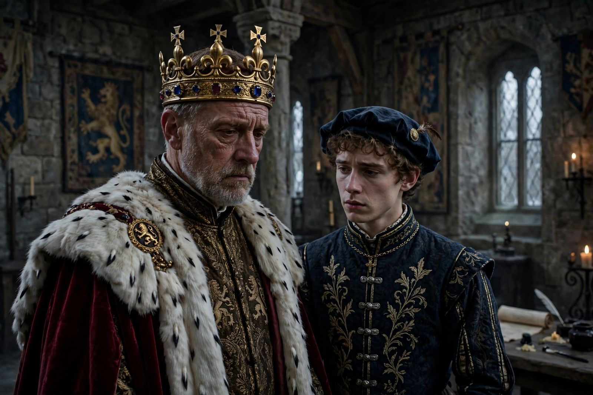

Edward II (play)
| Edward II | |
|---|---|
 | |
| Written by | Christopher Marlowe |
| Date premiered | c. 1592 |
| First published | 1594 |
| Full title | The Troublesome Reign and Lamentable Death of Edward the Second, King of England, with the Tragical Fall of Proud Mortimer |
Edward II is an English history play by Christopher Marlowe, written around 1592 and first published in 1594, shortly after the playwright's death. Drawing on Holinshed's Chronicles, it dramatises the reign of King Edward II of England, his devotion to his favourite Piers Gaveston, civil war with his barons, deposition and murder.
Plot
Edward recalls Gaveston from exile and showers him with titles, alienating the barons and Queen Isabella, who joins forces with Roger Mortimer. Gaveston is captured and executed; Edward's new favourites, the Despensers, fare no better. Isabella and Mortimer invade, Edward is forced to abdicate in favour of his son and is murdered at Berkeley Castle — in Marlowe's version, by the assassin Lightborn. The young Edward III then turns on Mortimer, has him executed, and mourns his father.
Significance
Edward II is among the earliest English history plays and a model for Shakespeare's Richard II. Its concentration on the conflict between private love and public duty, and its frank treatment of the king's attachment to Gaveston, have made it a landmark in the study of sexuality in early modern drama. Notable modern productions include Derek Jarman's 1991 film adaptation.